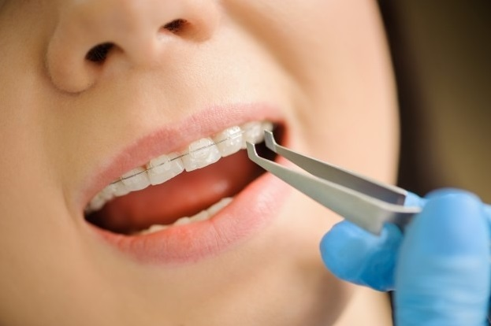

Blog
How to Fix Your Broken Braces Brackets Amid Quarantine

In the Philippines, ceramic braces are getting more and more popular for patients who want to align their teeth and fix bite problems. Unlike the traditional metal braces, the ceramic ones are made of high-grade polycrystalline ceramic (in some cases, porcelain or plastic). The brackets, wires, and elastics are often clear or else colored to be the same color as your pearly whites. As a result, they are less noticeable and much lighter too. All of these while also gradually perfecting the alignment of your teeth. Though ceramic braces come with several advantages, this doesn't mean that they are not susceptible to inconveniences that orthodontic patients also face when wearing metal braces. The brackets and wires are fragile and can be damaged when:
- Eating sugary, crunchy, and hard-to-chew foods (such as nuts, candy, corn chips, pretzels, etc.)
- Over-brushing (which also results in tooth abrasion)
- Flossing incorrectly (which leads to gum tissue damage and prolonging gum sensitivity too)
If one of your brackets has broken, or your elastics are misplaced, or you're experiencing other inconveniences, here's what you need to do for a quick fix and keep further complications at bay:
- Determine what's damaged. Due to quarantine policies, patients with minor issues on their ceramic braces are encouraged to set up a virtual appointment with their trusted dentist in the Philippines. The dental professional will be able to check the whole oral cavity, view the braces, monitor the patient's progress, and guide them to do any changes necessary. For instance, the wire is attached but sticking out, the patient can press it gently back into position using a cotton swab. Doing so will prevent it from cutting the inside of your mouth or cheeks. In the case of misplaced rubber bands, your dentist may send you elastics and teach you how to properly place them.
- Strictly follow your dentist. Though you're experiencing minor issues only, it's crucial not to neglect the guidelines of a professional. Say you require more rubber bands, orthodontic wax, or other adjuncts to your treatment, do not resort to cheap, fake, or uncertified dental fixes. Always go for treatments guided by a professional than DIY. Your dentist will gladly mail and send the orthodontic supplies you needed along with proper instructions, while also stressing that your tools and materials must be sterile. Remember, preventing further infections/complications and maintaining the integrity of your ceramic braces are top priorities.
- Book an appointment. With the presence of the pandemic, dentists emphasize that dental clinics only accept scheduled visits as part of precautionary measures. For now, the urgency for seeing your dentists depends on how much discomfort you're experiencing and the degree of damage. If the bracket of your ceramic braces has come loose, remove it completely if possible and bring it with you to the orthodontist for reattachment. For emergencies that may arise aside from several loose brackets, broken wires, or missing elastics, you can call your dentist and have your concerns attended immediately.
Fixing your ceramic braces has become more challenging in the midst of COVID-19 in the Philippines. Fortunately, dentists from premium dental clinics are committed to providing oral care while also ensuring the safety of their patients. For oral health concerns, don't hesitate to reach out to professionals if necessary. Keep your ceramic braces at its best even when you're at home.